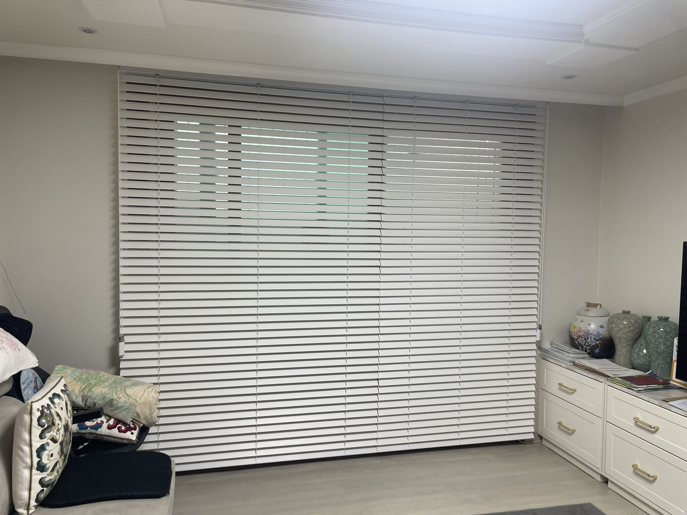

시공 내용
거실 통창에 화이트 블라인드를 시공했습니다. 넓은 창을 깔끔한 일자 라인으로 정리해 거실이 더 넓어 보입니다.

시공 포인트
- 줄 하나로 채광을 단계적으로 조절
- 창 구간마다 나누어 조작이 쉽게
- 깔끔한 일자 라인
비슷한 공간이라면
이 사례 번호(case-25)를 알려주시면 같은 구성으로 상담해 드려요.
콤비 블라인드 자세히 보기 · 무료 방문 견적 신청